How to Format Objects in the Microsoft Whiteboard App (Windows 11)
This tutorial covers:
How to Copy an Object:
How to Paste an Object:
How to Change the Color of a Shape
How to Change the Border Color of a Shape
How to Change the Color of a Sticky Note
No time to scroll down? Click through this tutorial presentation:
See a video tutorial:
How to Copy an Object With Click
- Step 1: First select an object. In the menu that opens, click the “Copy” or double squares button. 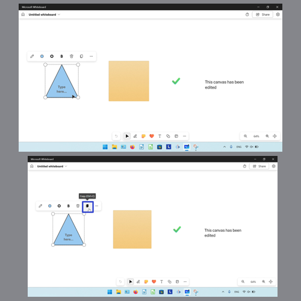
How to Copy an Object With Keyboard Shortcut
- Step 1: Select an object. On the keyboard press Ctrl + C. 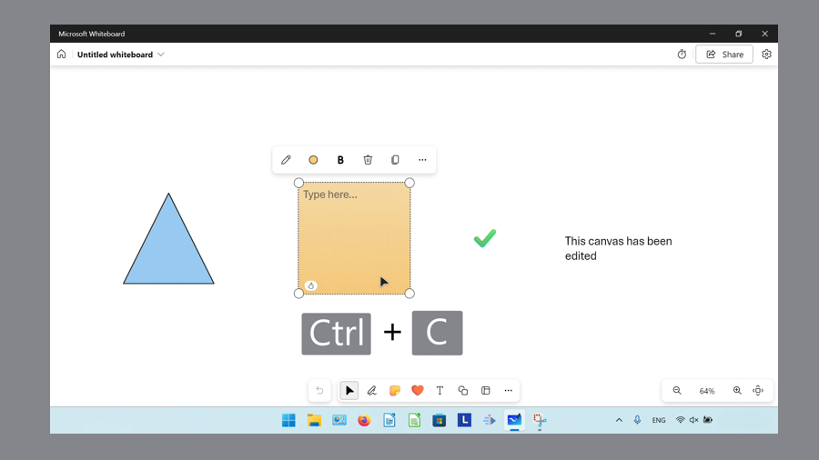
How to Copy an Object With Menu
- Step 1: First select an object. In the menu that opens, click the “More” or “…” button. 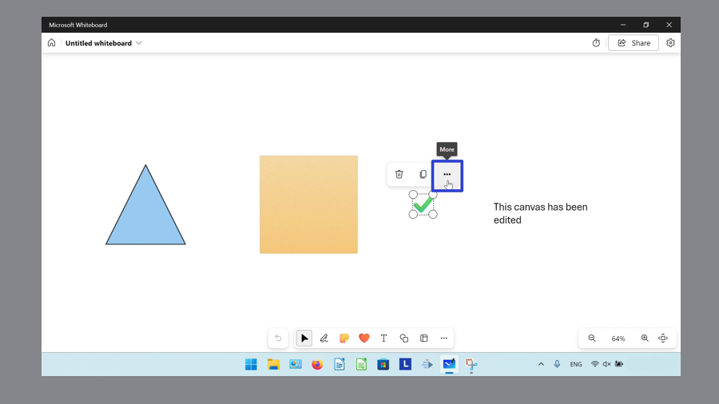
- Step 2: In the menu that opens, click “Duplicate”. 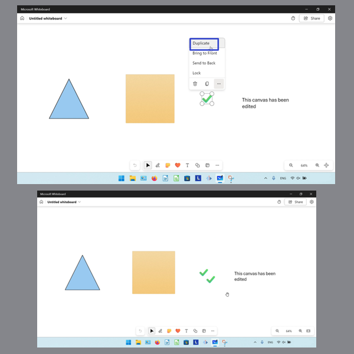
How to Paste an Object With Right Click
- Step 1: Copy an object. Right click anywhere on the canvas. 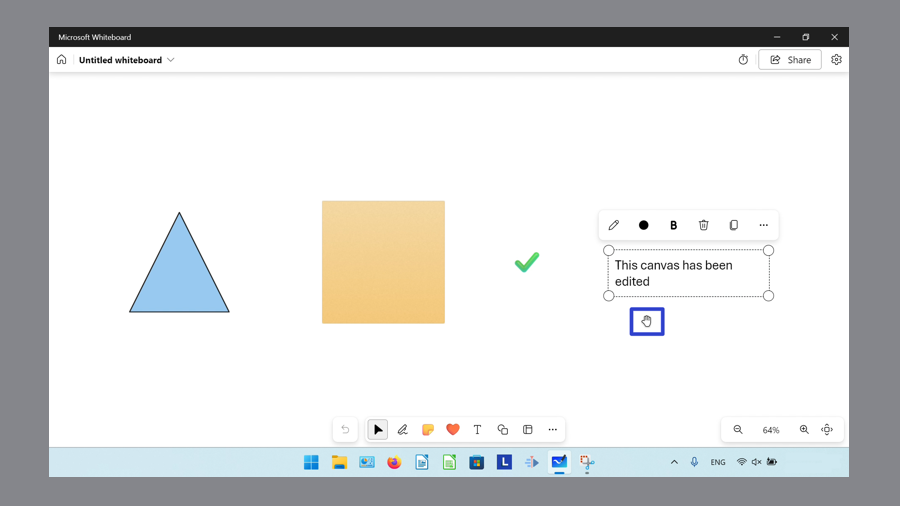
- Step 2: In the menu that opens, click “Paste”. 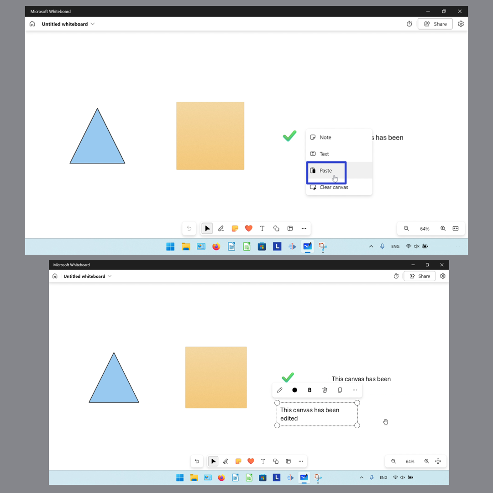
How to Paste an Object With Keyboard Shortcut
- Step 1: First copy an object. On the keyboard press Ctrl + V. 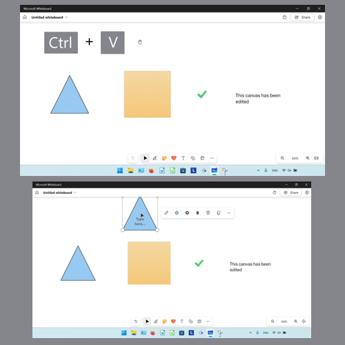
How to Change the Color of a Shape
- Step 1: Select a shape object. In the menu that opens, click the “Shape color picker” button. 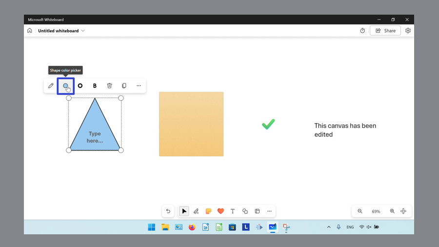
- Step 2: In the menu that opens, click to select a color. 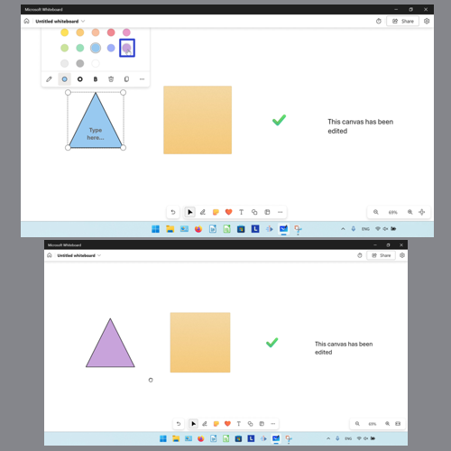
How to Change the Border Color of a Shape
- Step 1: First select a shape object. In the menu that opens, click the “Shape border color picker” button. 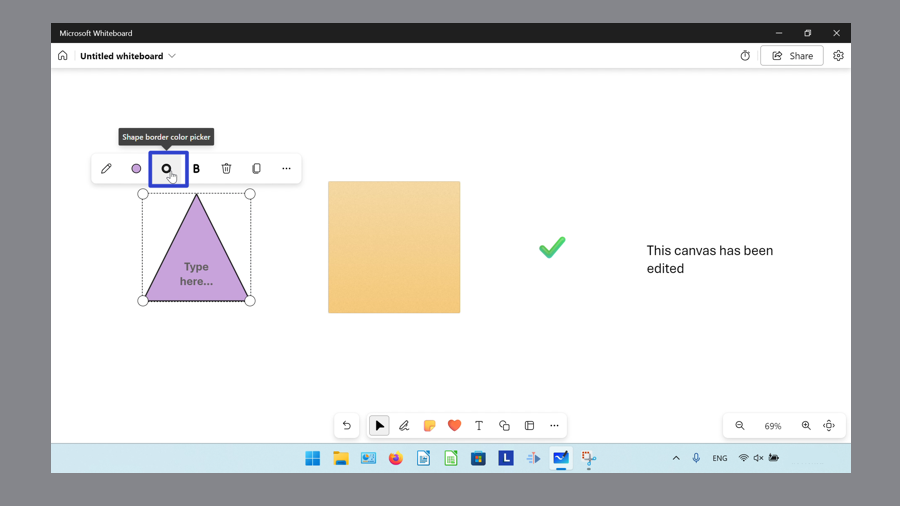
- Step 2: In the menu that opens, click to select a color.
How to Change the Color of a Sticky Note
- Step 1: Select a sticky note, and in the menu that opens, click the “Background color picker” button. 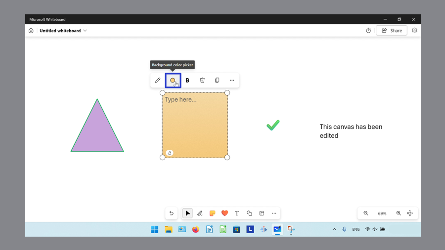
- Step 2: In the menu that opens, click to select a color. 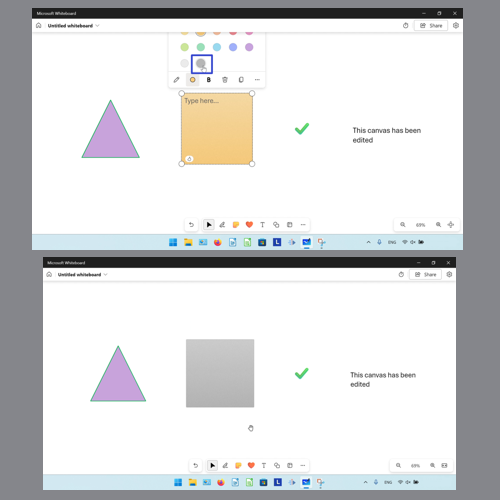
Save a copy of these instructions for later with this free tutorial PDF.